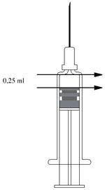
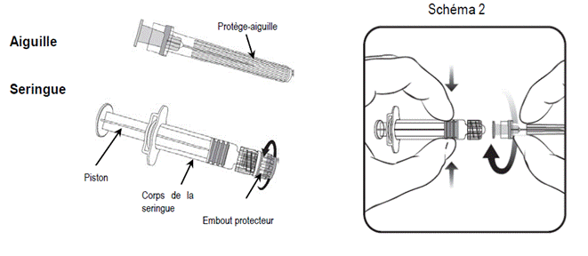

RÉSUMÉ DES CARACTÉRISTIQUES DU PRODUIT
ANSM - Mis à jour le : 30/12/2014
FLUARIX, suspension injectable en seringue préremplie, vaccin grippal inactivé à virion fragmenté
2. COMPOSITION QUALITATIVE ET QUANTITATIVE
Virus de la grippe (inactivé, fragmenté) des souches suivantes* :
A/California/7/2009 (H1N1) pdm09 - souche analogue utilisée (NIB-74xp) dérivée de A/Christchurch/16/2010
................................................................................................................................ 15 microgrammes HA**
A/Texas/50/2012 (H3N2) - souche dérivée utilisée (NYMC X-223A)................................. 15 microgrammes HA**
B/Massachusetts/02/2012 - souche dérivée utilisée (NYMC BX-51B).............................. 15 microgrammes HA**
Pour une dose de 0,5 ml.
* Cultivées sur œufs embryonnés de poules provenant d’élevages sains.
**Hémagglutinine.
Ce vaccin est conforme aux recommandations de l'Organisation Mondiale de la Santé (OMS) (dans l'Hémisphère Nord) et à la recommandation de l’Union Européenne pour la saison 2014/2015.
Pour la liste complète des excipients, voir rubrique 6.1.
FLUARIX peut contenir des traces d’œuf (tels que ovalbumine, protéines de poulet), de formaldéhyde, de sulfate de gentamicine, de désoxycholate de sodium, utilisés lors du procédé de fabrication (voir rubrique 4.3).
Suspension injectable en seringue préremplie.
Fluarix est incolore à légèrement opalescent.
4.1. Indications thérapeutiques
Fluarix est indiqué chez les adultes et les enfants à partir de 6 mois.
L’utilisation de FLUARIX doit se baser sur les recommandations officielles.
4.2. Posologie et mode d'administration
Adultes : une dose de 0,5 ml
Population pédiatrique
Enfants à partir de 36 mois : une dose de 0,5 ml.
Enfants de 6 mois à 35 mois : les données cliniques sont limitées. Une dose de 0,25 ml ou 0,5 ml peut être utilisée. Pour plus d’informations sur l’administration d’une dose de 0,25 ml ou 0,5 ml, voir rubrique 6.6.
La dose administrée doit être conforme aux recommandations nationales en vigueur.
Pour les enfants de moins de 9 ans, n'ayant pas été vaccinés auparavant, une seconde dose devra être injectée après un intervalle d'au moins 4 semaines.
Enfants de moins de 6 mois : la sécurité et l’efficacité de FLUARIX chez les enfants de moins de 6 mois n’ont pas été établies. Aucune donnée n’est disponible.
Mode d’administration
Administrer par voie intramusculaire ou sous-cutanée profonde.
Précautions à prendre avant la manipulation ou l’administration du vaccin :
Pour les instructions concernant le mode de préparation du vaccin avant administration, voir rubrique 6.6.
La vaccination doit être différée en cas de maladie fébrile ou d'infection aiguë.
4.4. Mises en garde spéciales et précautions d'emploi
Fluarix ne doit en aucun cas être administré par voie intravasculaire.
La réponse en anticorps chez les patients présentant une immunodépression congénitale ou acquise peut être insuffisante.
Une syncope (évanouissement) peut survenir après toute vaccination, voire même avant, en particulier chez les adolescents, comme réaction psychogène à l’injection avec une aiguille. Ceci peut s’accompagner de plusieurs signes neurologiques comme un trouble transitoire de la vision, des paresthésies et des mouvements tonico-cloniques des membres durant la phase de récupération. Il est important que des mesures soient mises en place afin d’éviter des blessures en cas d’évanouissement.
Pour l’interférence avec des tests sérologiques, voir rubrique 4.5.
4.5. Interactions avec d'autres médicaments et autres formes d'interactions
La réponse immunitaire peut être diminuée si le patient est sous traitement immunosuppresseur.
Après vaccination antigrippale, il a été observé des réponses faussement positives aux tests sérologiques utilisant la méthode ELISA pour détecter les anticorps contre HIV1, hépatite C, et surtout HTLV1. Infirmées par le Western Blot, ces réactions transitoires faussement positives seraient dues à la réponse IgM induite par la vaccination.
Les vaccins grippaux inactivés peuvent être utilisés à tous les stades de la grossesse. Les données de sécurité disponibles sont plus importantes pour le deuxième et le troisième trimestre de la grossesse que pour le premier trimestre. Cependant, les données d’utilisation des vaccins grippaux inactivés dans le monde n’indiquent pas d’issues anormales pour le fœtus et la mère, attribuables au vaccin.
Allaitement
Le vaccin peut être administré en cas d'allaitement.
Fécondité
Il n’existe pas de données disponibles sur la fécondité.
4.7. Effets sur l'aptitude à conduire des véhicules et à utiliser des machines
Evénements indésirables observés au cours des essais cliniques :
La tolérance des vaccins grippaux trivalents inactivés est évaluée au cours d’essais cliniques en ouvert, non contrôlés, réalisés annuellement en conformité avec les exigences réglementaires, et incluant au moins 50 adultes âgés de 18 à 60 ans et au moins 50 personnes âgées de 61 ans et plus.
L’évaluation de la tolérance est réalisée durant les 3 premiers jours suivant la vaccination.
Les effets indésirables suivants ont été observés au cours des essais cliniques selon les fréquences suivantes :
Très fréquent (≥ 1/10) ; fréquent (≥ 1/100, < 1/10), peu fréquent (≥ 1/1 000, < 1/100).
Tableau des événements indésirables :
|
Classe d’organe |
Très fréquent (³ 1/10) |
Fréquent (≥ 1/100 ; < 1/10) |
Peu fréquent (≥ 1/1 000 ; < 1/100) |
|
Affections du système nerveux |
|
Céphalées*. |
|
|
Affections de la peau et du tissu sous-cutané |
|
Sueurs*. |
|
|
Affections musculo-squelettiques et systémiques |
|
Myalgies, arthralgies*.
|
|
|
Troubles généraux et anomalies au site d'administration |
|
Fièvre, malaise, frissons, fatigue. Réactions locales : rougeur, gonflement, douleur, ecchymose, induration*. |
|
*Ces réactions disparaissent généralement en 1 à 2 jours, sans traitement
Population pédiatrique
FLUARIX a été administré au cours de 3 études cliniques menées chez des enfants sains âgés de 6 mois à 17 ans (plus de 3500 enfants). Les effets indésirables suivants ont également été rapportés dans cette population.
|
Classe d’organe |
Très fréquent (³ 1/10) |
Fréquent (≥ 1/100 ; < 1/10) |
Peu fréquent (≥ 1/1 000 ; < 1/100) |
|
Trouble du métabolisme et de la nutrition
|
Perte d’appétit2 |
|
|
|
Affections psychiatriques
|
Irritabilité2 |
|
|
|
Affections du système nerveux |
Somnolence2, céphalées3 |
|
|
|
Affections gastro-intestinales |
|
Symptômes gastro-intestinaux 3 |
|
|
Affections musculo-squelettiques et systémiques |
Douleurs articulaires3, douleurs musculaires3 |
|
|
|
Troubles généraux et anomalies au site d'administration |
Fièvre2, fatigue3. Réactions locales : rougeur1, gonflement1, douleur1 |
Fièvre3, frissons 3 |
|
1rapporté chez les enfants âgés de 6 mois à 17 ans
2rapporté chez les enfants âgés de 6 mois à <6 ans
3rapporté chez les enfants âgés de 6 ans à 17 ans
Effets indésirables rapportés au cours de la surveillance après commercialisation
Les évènements indésirables rapportés au cours de la surveillance après commercialisation, en plus de ceux déjà observés au cours des essais cliniques, sont les suivants :
Affections hématologiques et du système lymphatique :
Thrombocytopénie transitoire, lymphadénopathie transitoire.
Affections du système immunitaire :
Réactions allergiques (symptômes incluant conjonctivite), conduisant dans de rares cas à un choc, angioedème.
Affections du système nerveux :
Névralgie, paresthésie, convulsions fébriles, troubles neurologiques, tels que encéphalomyélite, névrite et syndrome de Guillain-Barré.
Affections vasculaires :
Vascularite avec dans de très rares cas une atteinte rénale transitoire.
Affections de la peau et du tissu sous-cutané :
Réactions cutanées généralisées incluant prurit, urticaire, éruption cutanée non spécifique.
Déclaration des effets indésirables suspectés
La déclaration des effets indésirables suspectés après autorisation du médicament est importante. Elle permet une surveillance continue du rapport bénéfice/risque du médicament. Les professionnels de santé déclarent tout effet indésirable suspecté via le système national de déclaration : Agence nationale de sécurité du médicament et des produits de santé (ANSM) et réseau des Centres Régionaux de Pharmacovigilance - Site internet: www.ansm.sante.fr.
Il est improbable qu'un surdosage provoque un effet nocif.
5. PROPRIETES PHARMACOLOGIQUES
5.1. Propriétés pharmacodynamiques
Classe pharmaco-thérapeutique: vaccin contre la grippe, Code ATC: J07BB02.
La séroprotection est généralement obtenue dans les 2 à 3 semaines. La durée de l'immunité post-vaccinale vis-à-vis de souches homologues ou très proches des souches du vaccin est variable mais elle est en général de 6 à 12 mois.
5.2. Propriétés pharmacocinétiques
Sans objet.
5.3. Données de sécurité préclinique
Sans objet.
Chlorure de sodium, phosphate disodique dodécahydraté, phosphate monopotassique, chlorure de potassium, chlorure de magnésium hexahydraté, hydrogénosuccinate d'alpha tocophéryle, polysorbate 80, octoxinol 10 et eau pour préparations injectables.
1 an.
6.4. Précautions particulières de conservation
A conserver au réfrigérateur (entre +2°C et +8°C). Ne pas congeler. Conserver la seringue dans l'emballage extérieur à l'abri de la lumière.
6.5. Nature et contenu de l'emballage extérieur
- avec aiguille sertie : boîte de 1, de 10 ou de 20
- avec 1 aiguille séparée : boîte de 1, de 10 ou de 20
- avec 2 aiguilles séparées : boîte de 1
- sans aiguille : boîte de 1, de 10 ou de 20
Toutes les présentations peuvent ne pas être commercialisées.
6.6. Précautions particulières d’élimination et de manipulation
Le vaccin doit avoir atteint la température ambiante avant utilisation.
Agiter avant l'emploi. Inspecter visuellement avant l’administration.
Lorsqu’une dose de 0,5 ml est indiquée, la totalité du contenu de la seringue doit être injecté.
Instructions pour l’administration de 0,25 ml de vaccin chez les enfants âgés de 6 à 35 mois
|
Lorsqu'une dose de 0,25 ml est indiquée, la seringue préremplie doit être maintenue en position verticale et la moitié du volume doit être éliminée jusqu'à ce que le bouchon-piston atteigne la ligne marquée sur la seringue. Pour les seringues non marquées par une ligne, le schéma 1 expliquera l’utilisation de la dose de 0,25 ml. Alignez la seringue sur le schéma de telle manière que son bord supérieur corresponde à la flèche du haut. Poussez le piston jusqu’à atteindre la flèche du bas. Le volume restant de 0,25 ml doit être injecté. |
Schéma 1  |
Instructions pour l’administration du vaccin présenté en seringue préremplie sans aiguille sertie
Pour fixer l'aiguille à la seringue, reportez-vous au dessin ci-dessous. Toutefois, la seringue de FLUARIX peut être légèrement différente (sans pas de vis) de la seringue décrite dans le schéma. Dans ce cas, l'aiguille doit être fixée sans vissage.

1. En tenant le corps de la seringue d’une main (en évitant de tenir le piston), dévisser l’embout protecteur de la seringue en le tournant dans le sens inverse des aiguilles d’une montre.
2. Pour fixer l’aiguille sur la seringue, visser l’aiguille dans le sens des aiguilles d’une montre sur la seringue jusqu’à sentir un blocage (voir schéma 2).
3. Enlever le protège aiguille, ce qui à l’occasion peut être un peu difficile.
4. Administrer le vaccin.
Tout médicament non utilisé ou déchet doit être éliminé conformément à la réglementation en vigueur
7. TITULAIRE DE L’AUTORISATION DE MISE SUR LE MARCHE
LABORATOIRE GLAXOSMITHKLINE
100, ROUTE DE VERSAILLES
78163 MARLY-LE-ROI CEDEX
8. NUMERO(S) D’AUTORISATION DE MISE SUR LE MARCHE
· 34009 341 299 6 4 : 0,5 ml en seringue préremplie (verre de type I) munie d'un bouchon-piston (butyle) - boîte de 20.
· 34009 300 077 4 7 : 0,5 ml en seringue préremplie (verre de type I) munie d'un bouchon-piston (butyle) sans aiguille - boîte de 1.
· 34009 300 077 5 4 : 0,5 ml en seringue préremplie (verre de type I) munie d'un bouchon-piston (butyle) sans aiguille - boîte de 20.
· 34009 300 077 6 1 : 0,5 ml en seringue préremplie (verre de type I) munie d'un bouchon-piston (butyle) avec 1 aiguille séparée - boîte de 1.
· 34009 300 077 7 8 : 0,5 ml en seringue préremplie (verre de type I) munie d'un bouchon-piston (butyle) avec 2 aiguilles séparées - boîte de 1.
9. DATE DE PREMIERE AUTORISATION/DE RENOUVELLEMENT DE L’AUTORISATION
[à compléter par le titulaire]
10. DATE DE MISE A JOUR DU TEXTE
[à compléter par le titulaire]
Sans objet.
12. INSTRUCTIONS POUR LA PREPARATION DES RADIOPHARMACEUTIQUES
Sans objet.
Médicament non soumis à prescription médicale.